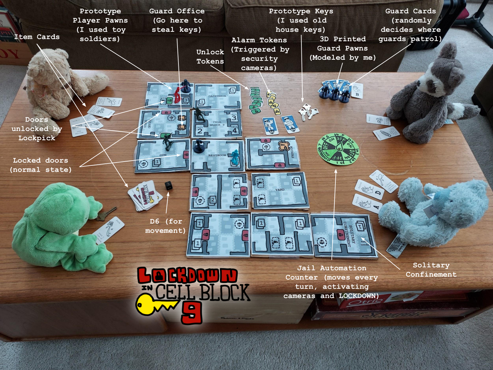

Lockdown in Cell Block 9
Last Updated 10/7/2026
About Game Maker Club
I and four friends founded the Game Maker Club at Richard Montgomery high school. In the 2023-2024 school year we created the project "Lockdown in Cell Block Nine," a board game influenced by video game mechanics, over a semester. The club is now indefinitely on hiatus because all club leadership graduated.
Lockdown in Cell Block Nine
In the 2023-2024 school year, Game Maker Club prototyped an all-original board game entitled "Lockdown in Cell Block Nine."
It's a goofy game about escaping from prison. Players compete to be the fastest one out of the jail using ridiculous methods like digging tunnels with spoons.
The core development team was myself and David, Kieron, Jack, Nethaka, Kailash, and Salim.
A central mechanic of the game is the automated camera system which turns security cameras on at regular intervals, allowing prisoners to be caught if they don't time their moves with the correct turn. Also important is the random guard spawning system which assigns guards to check on a subset of spaces on the board, and if they find prisoners, to catch them.
Something I found especially remarkable about this game in playtests was how it led to players creating their own wild escape stories. I'm a sucker for narrative in games, and so seeing the emergent behavior of chaining together multiple related cards to have a super-turn and break out was cool and a memorable experience for players.

My stuffed animals playing the game.
Read the manual for the game here.